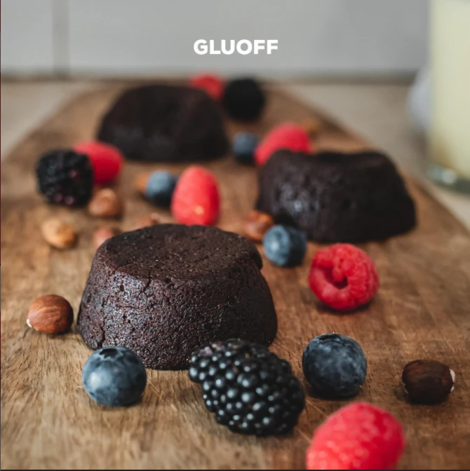
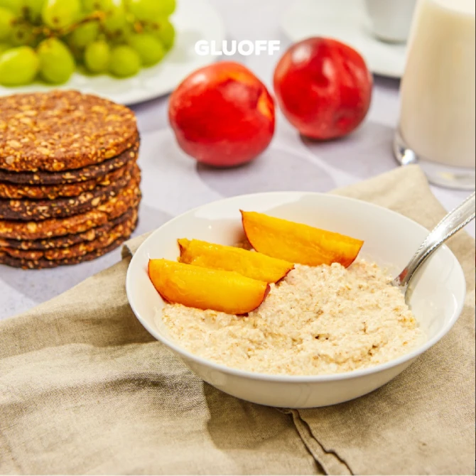
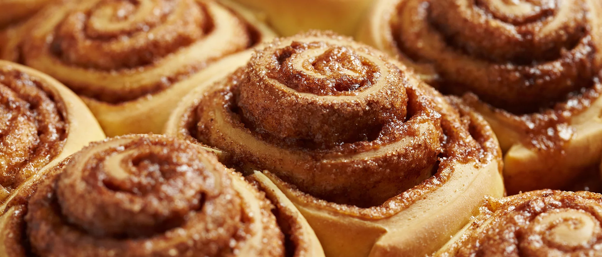

Doce · 20 min
Todos merecem saborear sem preocupações. Criamos snacks sem glúten para que ninguém fique de fora dos bons momentos à mesa.
Porque à mesa somos todos iguais.



Doce ou salgado? Aqui há espaço para ti.
Ver os sabores ↗